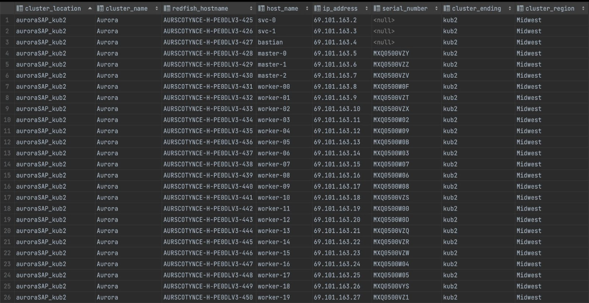
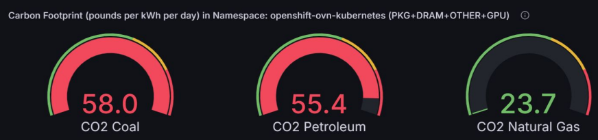
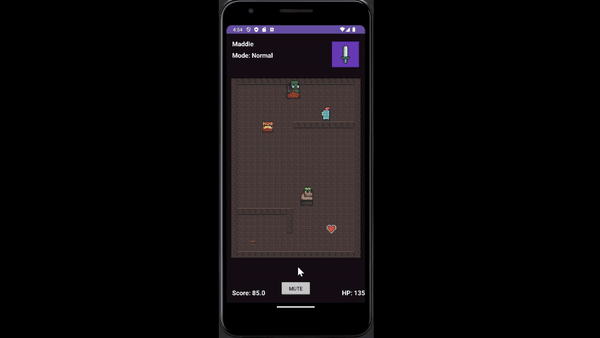
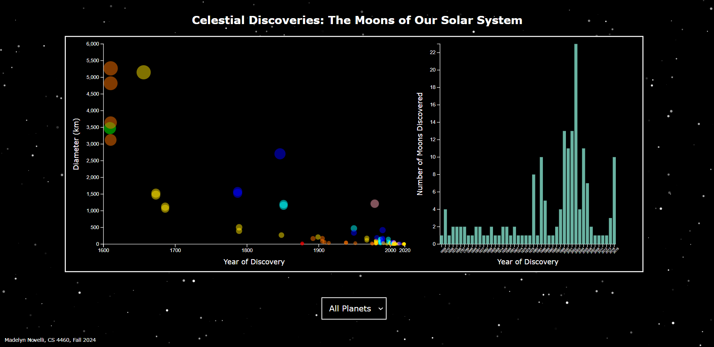
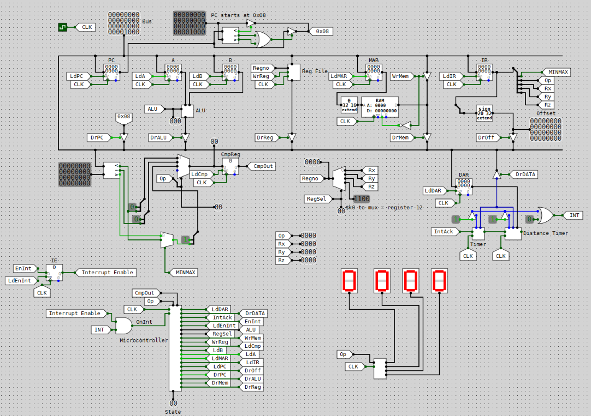
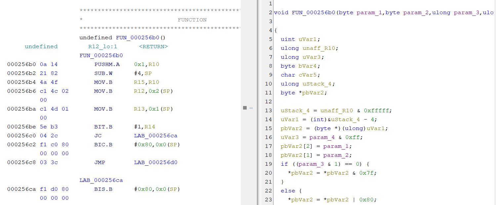
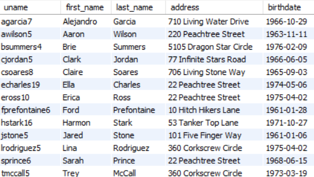
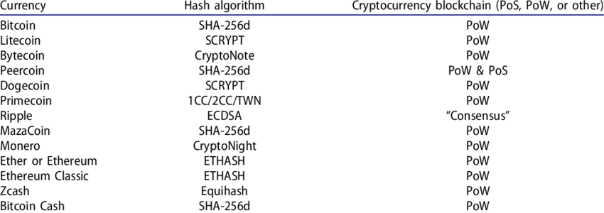

Projects & Coursework
HP iLO Inventory Management System
During my internships at Verizon, I developed and automated an inventory management system leveraging OpenShift API and Redfish technology to collect and organize essential hardware details from multiple clusters of bare metal servers. I improved and facilitated inventory tracking and strategic decision-making for maintenance and upgrades. I designed a user-friendly interface for the easy access and visualization of hardware information.
Tools used: Node.js, PostgreSQL, OpenShift API, Redfish
Dynamic Power Optimization and Emissions Monitoring in Kubernetes Clusters
During my internships at Verizon, I integrated Red Hat's Kepler power-monitoring platform to monitor the carbon dioxide emissions and total power consumption of numerous pods and containers in the North Seattle cluster. I set up dashboards on Grafana to easily identify the top namespaces in power consumption, and deployed a cpu frequency container image within Kubernetes in order to dynamically reduce power consumption as needed in such namespaces.
Tools used: Kubernetes, Grafana, Red Hat Kepler
2D Enchanted Quest Adventure Game
In my CS 2340 (Objects & Design) class, I collaborated with team of four other studetns to develop a 2D Dungeon Crawler Adventure Game using Java throughout five two-week Sprints following the Agile project management methodology. We implemented core gameplay features, including various levels, a leaderboard, and start, configuration, and end screens, while integrating object-oriented design principles.
Tools used: Java, Android Studio
View ProjectCelestial Discoveries: The Moons of Our Solar System
In my CS 4460 (Information Visualization) class, I individually created an HTML, CSS, and JavaScript visualization displaying all the named moons orbiting the planets of our solar system, including dwarf planet Pluto.
Tools used: HTML, CSS, JavaScript
View Website View GitHub RepoRISC Datapath with Interrupts and I/O Support
In my CS 2200 (Systems & Networks) class, I individually designed a series of datapaths for a RISC computer based on MIPS. Using CircuitSim, a logic simulator, I built on top of my initial datapath and implemented logic for interrupts and support for external I/O devices.
Tools used: CircuitSim (logic simulator), LC-2200 ISA
Embedded Systems Cybersecurity Research
I worked alongside researchers with the Georgia Tech Research Institute (GTRI) to examine and assess the existence of cybersecurity found within IoT hardware devices. I conducted a multi-domain investigation through the use of hardware reverse engineering, software/firmware reverse engineering using Ghidra, and RF analysis along with static and dynamic testing through instrumentation. In my most recent semester, I developed and spoofed a surrogate device design for the Signaling Line Circuit network of a wireless fire alarm system using an Arduino microcontroller. I tested and demonstrated any identified holes in the devices’ cybersecurity protection.
Tools used: C, Python, Ghidra
View ProjectDrone Dispatch Delivery System
In my CS 4400 (Intro to Database Systems) class, I analyzed, designed, and implemented a database application based on a fictional drone-based delivery service company using MySQL. I developed an Enhanced Entity-Relationship Diagram (EERD) and relational schema with a team of two others.
Tools used: MySQL
Ethical Implications of Cryptocurrency Paper
Blockchain technology and algorithms require excessive energy consumption which, for many years, have harmed the physical environment in inconceivable ways. In this paper I discuss ethical concerns surrounding the harmful effects cryptocurrency has left on the environment all around the globe. I also offer recommendations and solutions to alleviate some of the damages that have already been done, and prevent more in the future before it is too late.
Read HereJude Tobias Poetry Website Design and Development

I surprised my father by developing and designing a promotional website for his poetry using HTML and CSS. I constructed website animations using JavaScript to enhance the user experience. I conducted extensive testing and debugging to ensure the website was fully functional and error-free. I collaborated closely with my father to incorporate his feedback into the final design.
Tools used: HTML, CSS, JavaScript
View Website View GitHub Repo